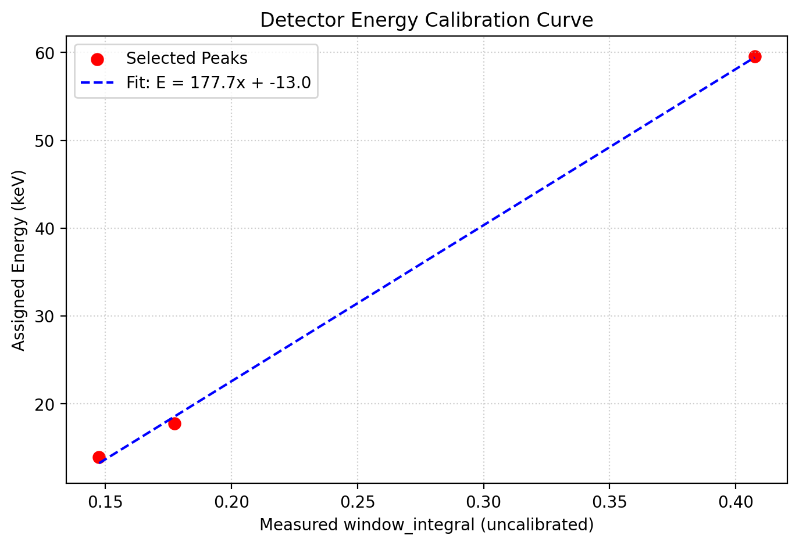

The main goal here is to figure out how to translate raw detector signals into actual physical energy units (keV) using an isotopic source. By hunting down the known gamma and X-ray peaks in our data, we can build a reliable conversion curve.
nsdf-cli.After matching up our trusted peak pairs—specifically the 13.95 keV Np L-alpha, 17.8 keV Np L-beta, and the main 59.54 keV gamma ray—we ran a quick linear fit.

Figure 1. Energy calibration curve showing measured window integral vs. assigned physical energy (keV) with a linear fit.The Jupyter notebook behind these numbers and plots is permanently locked in via Git: - Pinned Jupyter Notebook
The big three peaks lined up with the fit super nicely. That said, we noticed a few smaller, unexplained bumps showing up at higher window integrals. We aren’t entirely sure yet if they’re background noise, escape peaks, or something else entirely.